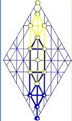

|
site |
book |
!The
Wild Man!
|
|
|
Mark
5
2
And as Y’shua got out of the boat, he was immediately confronted by a
grave keeper with a severely troubled spirit.
3
The man made his dwelling among the tombs in the graveyard; and no man
could withstand him: no, not even with chains-- with sharsherot
twrcrc:
with concatenations, with a series of interventions, authority
rc
after authority
rc
could not arrive at what could be done to address
w
this predicament
t.
4
The man had often been shackled: bound head and foot with chains
designed to limit his actions and to constrain his thoughts, as well,
but he overcame or ignored such restrictions, making a mockery of those
who would restrain him; neither could any individual tame him. None
could modify his behavior.
5
Day in and day out, the man roamed the mountains or walked among the
graves. Shouting out agonies and commiserations, he would cut himself
with sharp stones as punishment for his survival in the face of so much
grief and death.
6
But when he saw Y’shua from afar, he ran to him and worshipped him,
7
Crying with a loud voice, saying, “What part have I in you, and you in
me, Yahushua, Projection of the Holy Name? I adjure you by the Name that
is not spoken, that you should not tease me! Give me answer!”
8
This outburst came from him because Rebbe Y’shua had addressed him,
saying, “Unclean spirit! Come out of the man!”.
9
After the man’s outburst, Y’shua asked him, “What is your name?” Beside
himself, now, the man’s inner voice growled in confession,
saying, “My name is Legion: for we are many.”
10
And the man begged Y’shua, asking that he should not be sent away, out
of the country for which he mourned.
11
And as it happened, there was a large herd of swine feeding close by, on
the slopes of the mountain.
12
And the twisted spirits within the man cried out to Y’shua’s spirit,
begging, “Send us into those swine, that we may live in them!”
13
And without hesitation, Y’shua gave them leave to enter the swine; and
so, the unclean spirits went out of the man. And as the spirits entered
the swine, the entire herd stampeded, running violently down the steep
mountainside, falling into the sea, which choked the life out of them.
The swine numbered about two thousand
myypla:
that is to say, they had tormented
a
the man, as with severe lashes of a whip
l,
constraining
p
his ability to apply
y
himself, which was the cause
y
of all his grievances
m.
14
And they that had care of the swine fled, reporting in the city what had
happened within the countryside. And they all went out to see,
precisely, what it was that had been done.
15
So they came unto the rebbe, and they looked upon the man that had been
bound by the legion of twisted spirits. Fully clothed, he was sitting
upright, apparently in his right mind; and the dread of things they
couldn’t understand overtook them.
16
And those who had witnessed the event, told the arrivals what happened
with the wild man and the swine. |
|
| To see any as such is to have judged already, throwing stones with your thoughts. Are they caught in the act, in your opinion? Should the apostles be judged for admitting they were beset by errors? Is any of you better, in comparison? Is it not written that to offend in one point is to offend in all?! Judgmental busybodies! They are sons of god, as we are instructed: When you've done--or thought, for that matter-- a thing concerning the least, you've done it unto the Son of God. This teaching entails more than messiah sticking up for the unfortunate; it's warning that all people carry messiah within themselves, even while bound by error. If we had known our thoughts and deeds concerning "the lost" effectively murdered, in our minds, the reality of messiah within them, we would not have so killed the Lord of Glory. Don't reach out to anysuch as though they're to be pitied, no matter how pitiful they are by conventional understanding; reach out to touch the Son of God in these, your brothers and sisters, calling messiah forth! The saved and the lost?! Bah!!!! NONE shall be lost but the Son of Perdition, the memory of the error in each of us, upon that day we shall come together in the unity of Faith, crying Abba, Father, Blessed be your name! | |
|
site |
book |